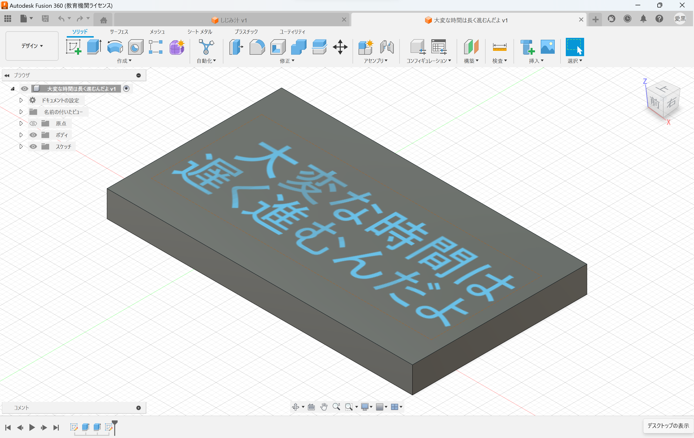
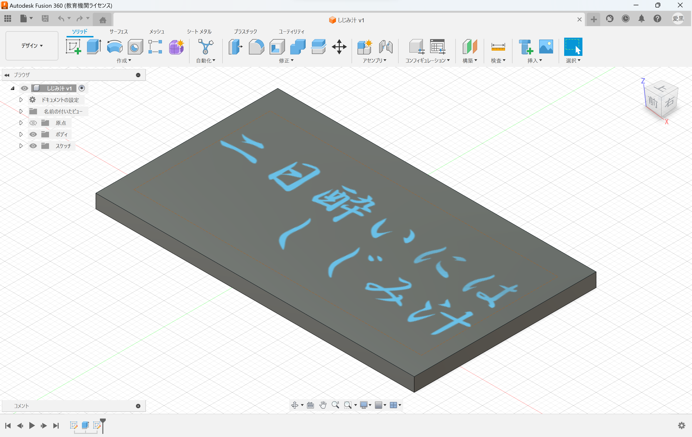
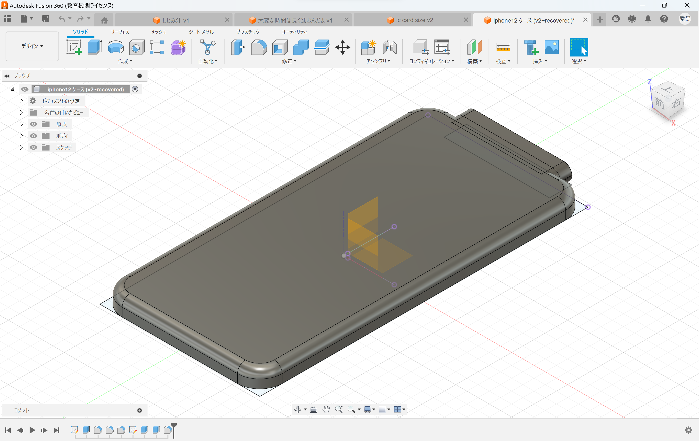

デジタルファブリケーション
第4回 design for others
電車の中で意図せず睨んでいるようにみえてしまっている人への商品
スマホケースの裏にメッセージカード的なもの入れて周りの人の恐怖心を和らげる。
 
ic card のサイズならスマホケースに挟めると予想。
ic card のサイズは54mm×85mm×1mmなのでこのサイズのカードを３Dプリンターで出力し、レーザーカッターのレーザーで文字を刻印する。


色んな文字を入れてくすっと笑えるような状況を作り、周りの恐怖心を消す！
感想
白一色だと見にくいので色をつけて文字を見やすくしてもいいと思った。

最初はこのカードを裏に挟めるようなスマホケースを作ろうと思ったが思った以上に難易度が高く途中で断念した。
自分の現時点でのポテンシャルを正しく見極めることの大切さを思い知った。100均などに売っている製造が簡単そうな商品も元の設計は物凄く大変だということを身をもって学んだので簡単にケチつけるのはやめようと思った。